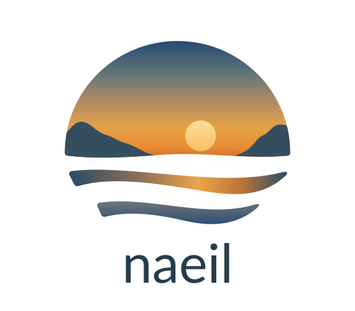
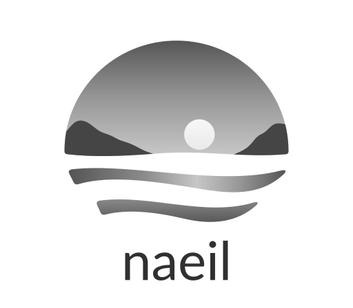

naeil 1.0.1 — 크기와 배경 검수
100% 배율에서 확인. 모든 로고는 패키지의 실제 SVG 파일입니다.
color
16px20px24px28px32px40px48px64pxhorizontal 28pxhorizontal 24pxfooter 20px
stacked 160px gray
16px20px24px28px32px40px48px64pxhorizontal 28pxhorizontal 24pxfooter 20px
stacked 160px gray-dark
16px20px24px28px32px40px48px64pxhorizontal 28pxhorizontal 24pxfooter 20px stacked 160px
stacked 160px